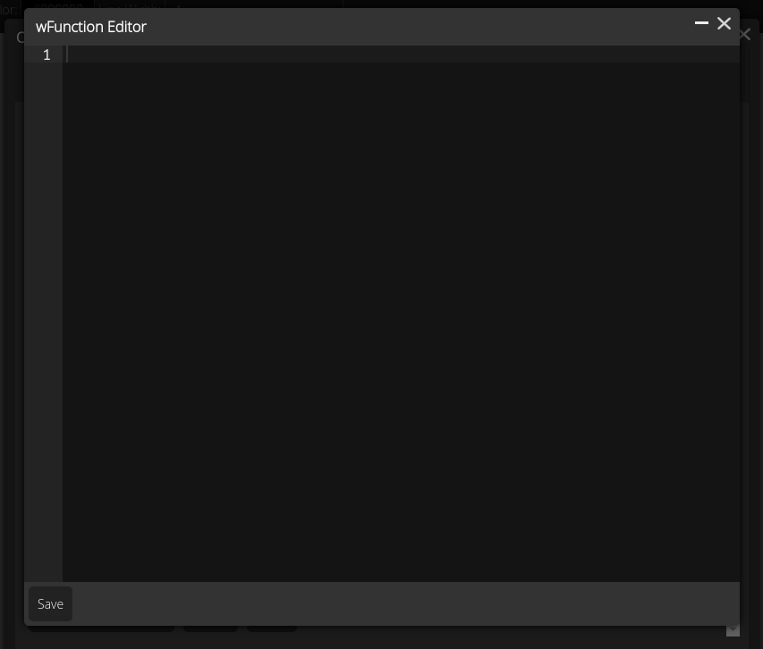
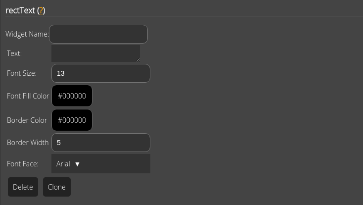
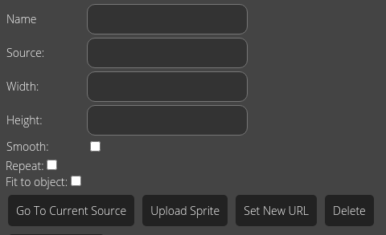

Objects are the basic building block of a PhSim simulation.
The main objects that can be added to a simulation are circles, rectangles, polygons and regular polygons. These can have various extensions known as widgets that extend their functionality.
The main way to add circles is to do the following:
The main way to add regular polygons is to do the following:
Note: adding a regular polygon is mostly the same as adding a circle.
The name of an object is an optional feature that is used to identify an object.
In the PhSim editor, the mass of an object can be deterimined by two ways:
Note: Density in PhSim simulations is not defined in mass per volume, but mass per area. This is because it is a 2D simulation.
The way objects interact can be changed using collision classes.
Collision classes are seperated by spaces. For instance, the string
class1 class2 contains the sensor classes class1
and class2.
If two objects have collision classes defined and they share at least one collision class, they will collide. However, if the two objects have collision classes and share none, then they will not collide.If there are no collision classes in an object, then it will collide with any object.
Please note that any object that has collisions disabled will not collide with anything, regardless of the collision classes they have.
To edit the collision classes of an object, do the following:
In PhSim, a sensor is a feature that is used to make certain things happen when they touch. Sensor classes are implemented using a string seperated by spaces. When two objects that share at least one
Each object has the ablity to filled with a solid color. It can be edited in to ways:
To change the fill color in the
Widgets are features that can be added or removed to the object. They can be edited in the following way:
For a more technical discussion involving the phsim library, see the phsim
documentation on the PhSim.Widgets namespace.
The keyboardControls widget makes an object move in a certain direction guided by the arrow keys.
Here are the possible directions:
The setColor widget is used to set the color of the object. It is one of the wFunction based widgets. This means it can be triggered by means such as clicking the object.
The circular constraint widget is a special kind of constraint. If an object moves, then the angle of the object is set to the angle that specifies the direction of the constraint. It is defined by point in space.
The clone widget makes an object copy itself. It is a wFunction based widget. It can be triggered by things like keys and sensors.
The draggable widget allows one to drag any dynamic object that is not locked.
The toggleLock widget makes an object lock or unlock. It is a wFunction based widget.
The toggleSemiLock widget reverses the object's semi-lock status. It is a wFunction based widget.
The velocity widget makes a dynamic object go at a certain velocity. They can either be edited by the mouse by dragging an orange arrow or using the widget editor in the object editor. They are a widget based on the wFunction widget. This means that they can be triggered by updates, time intervals, first updates, updates, sensors, clicking and among other things.
The translation widget makes an object translate by some vector. They can either be edited by the mouse by dragging an orange arrow or using the widget editor in the object editor.
It is a widget based on the wFunction widget. This means that it can be triggered by updates, time intervals, first updates, updates, sensors, clicking and among other things.
The rotation widget rotates an object by some angle.
It is a widget based on the wFunction widget. This means that it can be triggered by updates, time intervals, first updates, updates, sensors, clicking and among other things.
Sets the angle of a unlocked dynamic object.
It is a widget based on the wFunction widget. This means that it can be triggered by updates, time intervals, first updates, updates, sensors, clicking and among other things.
The force widget exerts a force on the object if it is triggered in a certain way.
It is a widget based on the wFunction widget. This means that it can be triggered by updates, time intervals, first updates, updates, sensors, clicking and among other things.
It is a widget based on the wFunction widget. This means that it can be triggered by updates, time intervals, first updates, updates, sensors, clicking and among other things.
The elevator widget makes an object go in a certain direction and then go in the opposite direction when it reaches some limit.
The elevator's range is defined by bounds. Here are the types of bounds:
The transformCameraByObj widget makes the camera move whenever the object moves.
It is a widget based on the wFunction widget. This means that it can be triggered by updates, time intervals, first updates, updates, sensors, clicking and among other things.
The setBorderColor widget changes the solid fill color for the object's border.
It is a widget based on the wFunction widget. This means that it can be triggered by updates, time intervals, first updates, updates, sensors, clicking and among other things.
The setLineWidth widget sets the thickness of the border of an object.
It is a widget based on the wFunction widget. This means that it can be triggered by updates, time intervals, first updates, updates, sensors, clicking and among other things.
The deleteSelf widget makes an object delete itself if it is triggered in a certian way.
It is a widget based on the wFunction widget. This means that it can be triggered by updates, time intervals, first updates, updates, sensors, clicking and among other things.
The constraint widget adds a constraint to an object as the name suggests.
It is a widget based on the wFunction widget. This means that it can be triggered by updates, time intervals, first updates, updates, sensors, clicking and among other things.
The transformAgainstCamera widget makes an unlocked dynamic object go in the opposite direction of the camera when it changes. This makes it look like it is not moving at all.
The playAudio widget makes audio play.
It is a widget based on the wFunction widget. This means that it can be triggered by updates, time intervals, first updates, updates, sensors, clicking and among other things.
Audio can be looped.
Makes an object not rotate.
Note: This contains many details that are techinical. Using this widget and understanding it requires knowlege of JavaScript. Do not use JavaScript that you do not know if you can trust. Some JavaScript can be used to utilize attacks by hackers.
The wFunction (Widget function) widget allows one to call a piece of JavaScript based on one of the following triggers:
To create a wFunction for an object, do the following:
Once the wFunction widget is created, one can edit the code by pressing the "Widget Function Editor" button. Here is what it should look like:
Here are some important things to note about the code:
this keyword
refers to the DynObject instance that will be created when the simulation runs.
For example, this.phsim would refer to the parent PhSim object instance.
this keyword
refers to the PhSim instance.
Many widgets operate on top of the wFunction widget. These are known as wFunction based widgets. They can be triggered in the same exact same way as wFunctions.
The rectText widget allows one to add rectangles to rectangles. In the widget editing form, there are several options for editing:
Here is a screenshot of the editing form for reference:
The content of the rectText can have magical words. Here they are:
For example, if the content of the rectText is Score: {__game__score},
then it would display as "Score: 5" if the game's score is 5.
A dynamic object could be locked or semi-locked. Here are the differences:
When a sprite is added to the object, the sprite editing form should appear
Here is what the form for editing sprites should look like:
